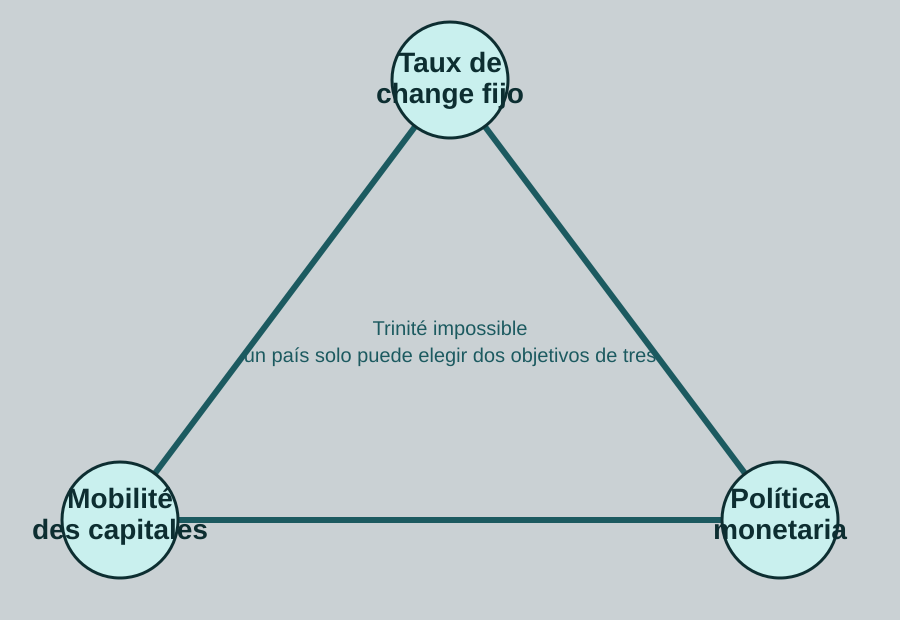

Cuando hablamos de crisis financieras, guerras de divisas, desequilibrios comerciales o endeudamiento externo, hablamos en realidad de síntomas visibles de una infraestructura más profunda: el sistema monetario internacional.
Un sistema monetario internacional es el conjunto de reglas, instituciones, prácticas y jerarquías que organizan las relaciones entre monedas nacionales. Define cómo se liquidan los pagos, cómo se financian los desequilibrios, qué monedas sirven de reserva y qué límites pesan sobre las políticas económicas.
Una infraestructura política
El SMI no es un simple convenio técnico reservado a bancos centrales. Es una arquitectura política que refleja relaciones de poder. Decide quién emite la liquidez aceptada por todos, quién debe ajustarse cuando hay desequilibrios y quién puede endeudarse en su propia moneda.
Convertibilidad y confianza
La convertibilidad determina en qué medida una moneda puede cambiarse por otras monedas o activos internacionales. Una moneda ampliamente aceptada facilita importaciones, financiación y acumulación de reservas. Una moneda débil o poco convertible encierra a un país en la dependencia externa.
Regímenes de cambio
Los tipos de cambio pueden ser fijos, flotantes o gestionados. Cada opción implica un compromiso entre estabilidad externa, autonomía monetaria y exposición a los flujos de capital. El famoso triángulo de Mundell resume esta restricción: no se puede tener simultáneamente tipo fijo, libre movilidad de capitales y política monetaria autónoma.

El triángulo de Mundell resume una restricción clásica de las economías abiertas.
Reservas y moneda clave
Los Estados acumulan reservas para defender su moneda, pagar importaciones y enfrentar crisis. Pero cuando esas reservas están denominadas sobre todo en una moneda dominante, el sistema se vuelve jerárquico. El emisor de la moneda clave dispone de un privilegio que los demás no tienen.
Instituciones internacionales
El FMI, los bancos centrales, los mercados de cambio, los sistemas de pago y los acuerdos regionales forman parte de esta infraestructura. Pero su existencia no garantiza justicia ni estabilidad. Todo depende de las reglas que organizan la creación y distribución de liquidez.
Por qué importa para la ecología
El SMI condiciona las estrategias de desarrollo, los modelos exportadores, la deuda externa y la presión sobre recursos naturales. Un país que necesita divisas puede verse obligado a extraer más, exportar más y sacrificar sus ecosistemas para mantener su solvencia.
Conclusión
Comprender el sistema monetario internacional permite ver que la transición ecológica no depende solo de tecnologías o comportamientos. Depende también de la arquitectura monetaria que organiza los incentivos de los Estados dentro de la economía mundial.
Jean-Christophe Duval